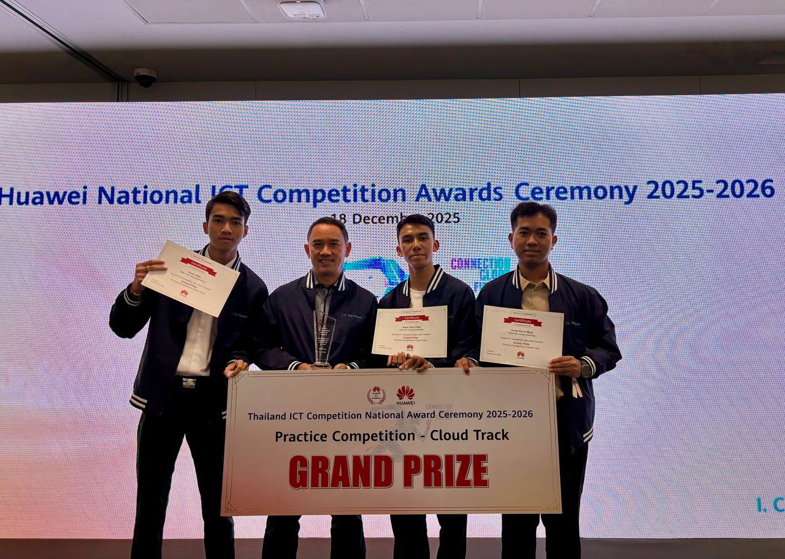

Huawei National ICT Competition (Cloud Track)
Bangkok, Thailand
I’m a junior Cloud / ML engineer and international engineering student at Mae Fah Luang University, focused on building secure, scalable systems that bring machine learning into the real world. I enjoy working across the stack—from backend services and data pipelines to cloud infrastructure—turning ideas into reliable products that are easy to operate and improve over time.
Recently, I’ve been building ML-driven projects such as a dataset-based memory training assistant for people with Parkinson’s, where I implemented end-to-end data pipelines (cleaning, train/validation splits, leakage checks), integrated model outputs via API, and added privacy-aware logging and basic monitoring. I’m also developing an AI exam proctoring web platform, owning Python components like event logging, evidence screenshots, and webcam-based checks using OpenCV.
On the infrastructure side, I’m comfortable with Linux and Git, and I work with tools like Docker, Kubernetes, Terraform, Jenkins, and Apache Spark to deploy and scale systems with consistency. I’m a Grand Prize Winner in the Huawei ICT Competition (Cloud Track) and hold multiple Huawei Cloud certifications—reflecting my commitment to strong cloud fundamentals and continuous learning.
If you’re looking for someone who can connect ML, backend engineering, and cloud deployment into practical, production-ready solutions, I’d love to collaborate.
Bangkok, Thailand

Payap University, Chiang Mai, Thailand

Mae Fah Luang University, Thailand

Mae Fah Luang University, Thailand

Credential ID — HWENDCCCDP623119
Huawei Certified ICT Associate
Huawei Certified ICT Associate

Credential ID — HWENDCCNDA030722

Credential ID — HWDCTEDA731963

Credential ID — HWENDCAIDA093639

Credential ID — HWENDCCCDP770815
_page-0001.jpg)
Palo Alto Networks Cybersecurity Academy

Cisco Networking Academy
A full-stack web platform that helps universities run secure online exams by monitoring suspicious behavior in real time. It combines browser activity tracking (tab-switch + cursor boundary violations) with webcam-based face monitoring (multiple faces + head-turn detection), and generates evidence-based reports (logs + captured images/video) for lecturers through an admin dashboard.


A role-based web platform for Mae Fah Luang University that streamlines project/document workflows end-to-end: teams can create and manage projects by status (pending/ongoing/in review/completed/overdue), upload and organize related files, message stakeholders directly, and handle approval + revision requests with clear confirmations and dashboard/report views for quick follow-ups.
A Flask + OpenCV web app with 35+ CV features and real-time YOLO object detection, previously deployed for public access and built with a responsive UI for live preview and comparisons.
A web-based natural-disaster intelligence platform that centralizes 67,605 historical disaster records (2000–2021) and answers user questions through a dual-AI system: dataset-grounded responses for factual accuracy plus a Gemini fallback for out-of-dataset or recent events, delivered via a Flask + Nginx backend and a clean frontend experience.
A hybrid emergency communication platform for disasters and crowded events that keeps SOS and hazard alerts working even when the internet fails. It combines real-time map monitoring and a responder dashboard with an offline phone-to-phone mesh (BLE/Wi-Fi) and gateway forwarding, plus priority routing + deduplication to reduce noise and generate actionable, location-based incident reports.
A mobile app that lets users plan moves and redesign rooms in real time using true-to-scale AR, while an AI assistant suggests safer, more efficient layouts. It also supports B2B use (movers/interior services showcasing plans to clients) and AR commerce via affiliate product placement for furniture brands.
A mobile emergency-response app designed for disasters and network blackouts, enabling victims and rescue teams to communicate via Bluetooth multi-hop mesh (phone-to-phone relays) even with zero internet/cellular coverage. It supports offline app sharing, SOS requests, victim/location reporting, and map-based routing to speed up coordination and reduce delays.